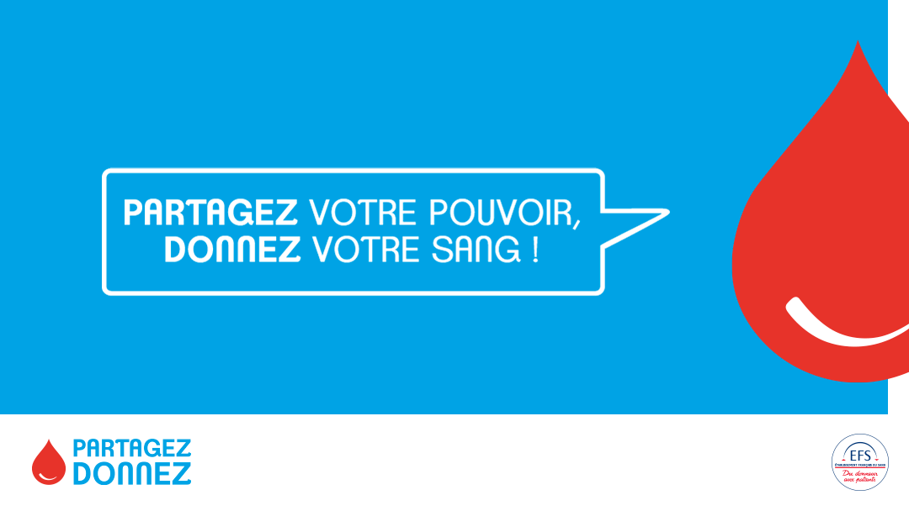

- Cet événement est terminé
Collecte de sang du 25 juin changement de lieu !
25 juin à 16 h 30 min - 20 h 00 min
Navigation de l'événement

En raison de la canicule, l’association « Du sang pour Ta Vie » de Hoenheim organise sa collecte le jeudi 25 juin 2026 de 16h30 à 20h au Centre socioculturel, 5 Avenue du Ried.
Les besoins en sang sont importants et essentiels pour soigner ceux qui en ont besoin.
Venez nombreux et prenez 1h pour sauver 3 vies.
Don du sang, c’est URGENT !

- PRENDRE RENDEZ-VOUS EN LIGNE : https://efs.link/zxCYF
La transfusion sanguine reste indispensable pour sauver la vie de certains malades et blessés.
Plus d’informations :